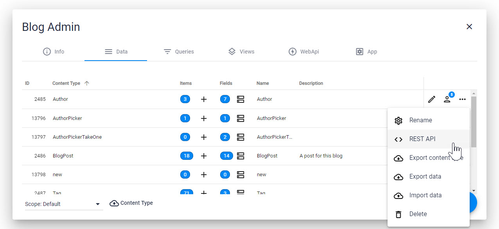

URLs for 2sxc WebAPI and REST APIs
The URL Schema describes how the paths look to access WebAPIs. When using $2sxc JS or other helpers like dnn-sxc-angular most if this is automatic. So this information is most useful if you are doing something very custom or accessing 2sxc APIs from externally (like mobile apps).
Finding the right URLs in the Admin-Dialogs
Tip
 Starting in 2sxc 11.10+ the admin-UI has [built-in help](xref:WebApi.Help.AdminUiContentRest) to get started. These UIs also show sample code and everything. So you probably don't need to read the stuff here and just go ahead with that.Tip
In 2sxc 11.10 this dialog was introduced for the Data section, and we'll add similar sections for Query and WebApi. So the remaining information on this page is really only for those who really want to dive in deep.
Note about Platform and Version Differences
The exact schema for the url varies depending on the platform you're using. So Dnn 7 is different from Dnn 9, and Oqtane is different again.
Also older versions of 2sxc had URLs which still work today but are not recommended any more, because they were not well structured.
In 2sxc 11.10+ we introduced REST-API help dialogs in the Admin-UI, so from now on you 2sxc will tell you what URLs you can use.
So the information you find here is valid, but you probably don't need it
URL Schema Specifications (Advanced)
One of the most confusing aspects when using the REST API or custom WebApis is finding the right URL to talk to the API. Read this to help you understand what's going on and get started quickly.
Every 2sxc REST URL is built with the following parts:
[root]/app/[app-identity]/[app-part]/[specifics]
- The
rootis determined by Dnn and changes a bit by Dnn version, portal, and language configuration. more - The
app-identitysays what app we're addressing. It's oftenautofor auto-detection, but when auto-detection isn't available, it's the app-folder name. more - the
app-partdetermines if we're accessing data, query or api of the app. - The
specificsis a path part describing what exactly what we're accessing and varies depending on the API.
Part 1: The Root Path
The Root in Dnn 9+
In Dnn 9 the root was shortened to: [site-root-with-language]/api/2sxc/...
Note
The old root from Dnn 7 and 8 still work in Dnn 9 for compatibility.
The Root in Dnn 7 and 8
Dnn 7 & 8: [site-root-with-language]/desktopmodules/2sxc/api/...
Warning
An easy thing to overlook is that in Dnn 7 and 8 it was 2sxc/api but in Dnn 9 it's api/2sxc
The Root in Oqtane
This is still WIP, but most likely it's [domain]/[site-id-number]/api/2sxc/...
Part 2: The App-Identity
When to use or not-use Auto-Detection auto
The App-identity can be either the word auto to use auto-detection, or the app-folder-name if you can't use auto-detection.
Tip
Whenever you're working in Dnn and accessing the endpoint from a module that contains the same App, then you should use auto-detection.
Warning
Auto-Detection relies on Dnn mechanisms to detect the Context (usually sending the PageId and ModuleId in HTTP-headers).
2sxc uses these headers to figure out what App you're using. If something fails in auto-detection, you're probably not using the normal Dnn conventions for making REST calls.
Warning
When calling an endpoint from another website or a mobile App, you cannot use auto but must specify the app-folder name.
Or you can provide Context by adding ?PageId=...&ModuleId=... to the url.
Tip
If you're not using auto-detection, then the root path must be absolutely correct. Here's why: If you have multiple portals then each portal could have other apps, or sometimes even the same app (like a Blog app). In this case, the root-path says what portal is being used, which in turn is important to get the correct app.
App-Identity Examples
To access an API (in this example the data) from JS code in the same app you can rely on auto-detection of the app, like this:
.../app/auto/data/...
To access the same Glossary-App from elsewhere, like from the skin (for example, to highlight all words to which your glossary-app has definitions), from another app, or from another website, you would specify the folder name as auto-detection won't work. Like this:
.../app/Glossary/data/...
This applies to all endpoints like data, query, api.
Part 3: App-Part Data, Query or Web-Api
Part 3a: App-Part Data
Tip
Starting with 2sxc v13, the data-api is .../app/.../data/TYPENAME.
In previous versions, it's .../app/.../content/TYPENAME.
If your part is data then you're using the normal content/entity REST API. It supports all common HTTP verbs. In this case you have the following possibilities after data/:
.../data/[YourContentType]- HTTP GET will retrieve all items of this type
.../data/[your-content-type]/[item-id]whereitem-idis the number or the GUID- HTTP GET will get one item
- HTTP POST is used to create an item or update it
- HTTP DELETE will delete the item
Warning
This requires that permissions are configured to allow it. The permissions are very powerful so make sure you understand them.
Tip
You can also configure permissions in ways that allow users to only create draft items (which would then require an admin to publish it)
Data Example
Assume you have the blog-app installed and your JS would request a JSON from this endpoint (logged in as host, so security is not an issue):
[root-path]/app/auto/data/BlogPost
...then your JS would receive a JSON with all BlogPost items. More examples:
- Reading
[root-path]/app/auto/data/BlogPost/1050would give you exactly one BlogPost item (with the id 1050) - HTTP POST to
[root-path]/app/auto/data/BlogPost/1050with a POST body of{ "Title": "changed title"}would let you update the item 1050.
Part 3b: App-Part Query
The Query endpoint can be accessed on .../query/[your-query-name]. Note that Query endpoints only support the HTTP-verb GET, since it's read-only.
Warning
This requires that permissions are configured to allow it. The permissions are very powerful so make sure you understand them.
Tip
Make sure you give your queries simple names without spaces if you intend to use them in REST calls.
Tip
Queries can also expect url-parameters if they are configured to do this.
So if you query has an ID-filter which expects a token [QueryString:id] you can also call your query like
.../app/auto/query/GetWithId?id=27
Query Example
Assume you have the blog-app installed and your JS would request a JSON from this endpoint (logged in as host, so security is not an issue):
[root-path]/app/auto/query/BlogPostsByAuthor?Author=Daniel%20Mettler
This would run the pre-defined query and return the Blog Posts of the author Daniel Mettler.
Part 3c: App-Part Custom C# Web Api
Custom WebAPI use one of these schemas
.../api/[controller-name]/[action-or-more-params].../[edition]/api/[controller-name]/[action-or-more-params]
Your C# code determines what HTTP-verbs will work (GET, POST, etc.). Your code is also responsible for determining what permissions are used, like Anonymous etc.
The [edition] is relevant if you're using Polymorphism. So if you don't specify an edition, the controller is expected to be in the [AppFolder]\api but if you do use polymorphism the controller must be in [AppFolder]\[edition]\api.
Read also
Demo App and further links
You should find some code examples in this demo App
History
- Introduced in 2sxc 5.x
- Query added in 2sxc 8.10
- Enhanced with Polymorph Editions in 2sxc 9.35 (allowing edition-folder/api)